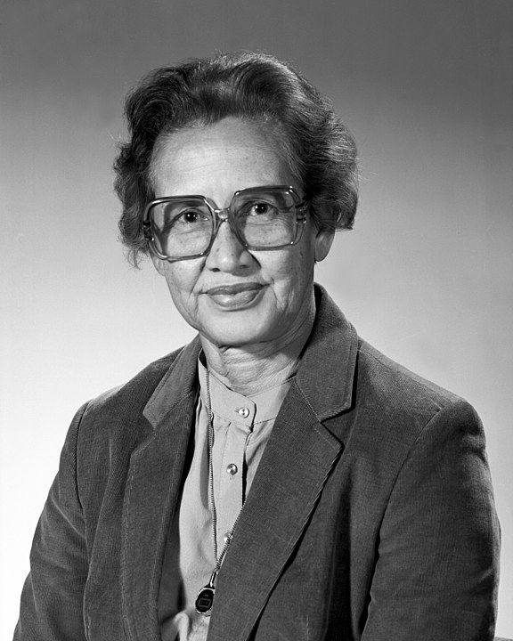

Katherine Johnson
Mathematician

Beginnings
- 1918 - Katherine Johnson was born in White Sulphur Springs, West Virginia
- 1931-1932 - Katherine graduated from high school at age 14 and attended West Virginia State University
- 1937 - Katherine graduates college at 18 with a degree in Mathematics and French
- 1938 - Katherine Johnson became the first African American woman to intergrate the University of West Virginia's graduate school
- 1939 - Katherine married her first husband, James Globe and quit a teaching job after one year to focus on creating and raising a family
Career
- 1953-1958 - Katherine Accepted a job at the National Advisory Committee for Aeronautics as a computer.
- 1956 - Katherine's first husband, James Globe died from an inoperalble brain tumor
- 1958 - Katherine was promoted to an aeronautics technologist
- 1959 - Katherine remarried United States Army Officer, Jim Johnson
- 1961 - Katherine Johnson took part in calculated the trajectory for the May 5, 1961 space flight of Alan Shepard, the first American in space.
- 1961 - Katherine calculated the launch window for his 1961 Mercury mission. Katherine plotted backup navigation charts for astronauts in case of electronic failures.
- 1969 - Katherine helped to calculate the trajectory for the 1969 Apollo 11 flight to the Moon.
- 1970 - Johnson worked on the Apollo 13 Moon mission. When the mission was aborted, her work on backup procedures and charts helped set a safe path for the crew's return to Earth
- 1986 - Katherine Johnson retired from NASA.
Later Life
- 1918 - Katherine Johnson was born in White Sulphur Springs, West Virginia
- 1931-1932 - Katherine graduated from high school at age 14 and attended West Virginia State University
- 1937 - Katherine graduates college at 18 with a degree in Mathematics and French
- 1938 - Katherine Johnson became the first African American woman to intergrate the University of West Virginia's graduate school
- 1939 - Katherine married her first husband, James Globe and quit a teaching job after one year to focus on creating and raising a family